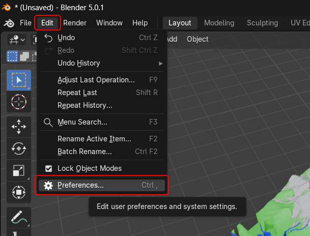

How To
- Download Blender from blender.org (Version 5.1 or higher)
- Download the Latest version of the Addon
- Open Blender and go to Edit → Preferences → Add-ons

- Popup opens. Go to Add-ons, click on the arrow on the top right, "Install from disk" and select the Addon you downloaded